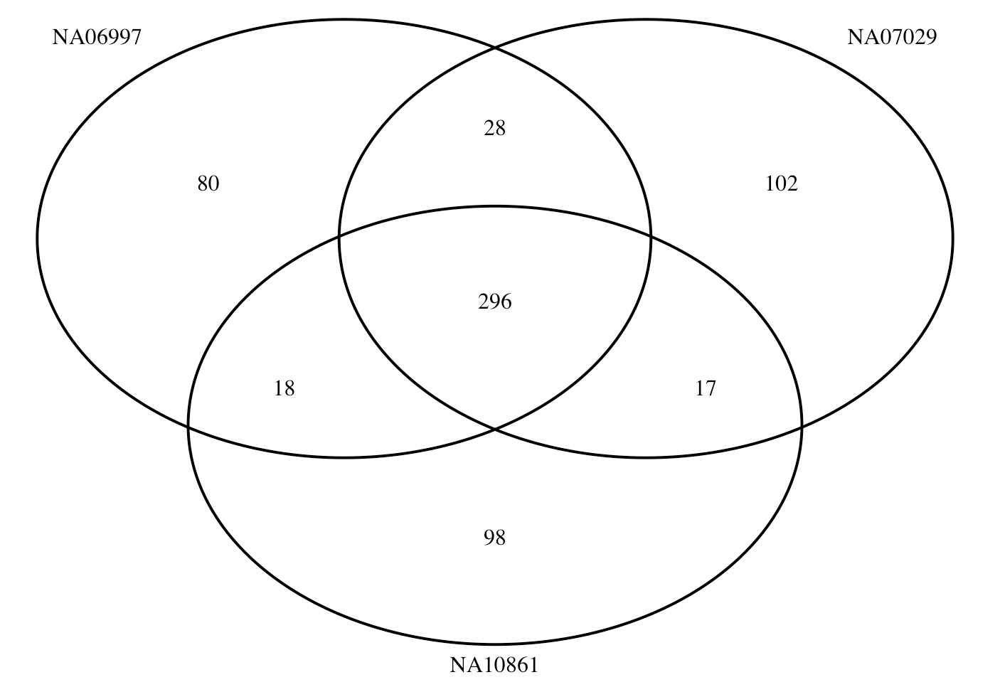

High coverage whole genome sequencing data was downloaded from the 1000 Genomes project.
https://www.internationalgenome.org/data-portal/sample
citation: Marta Byrska-Bishop et al., High-coverage whole-genome
sequencing of the expanded 1000 Genomes Project cohort including 602
trios
https://www.cell.com/cell/fulltext/S0092-8674(22)00991-6#sectitle0030
## downloaded cram file
ftp://ftp.sra.ebi.ac.uk/vol1/run/ERR398/ERR3989270/NA07029.final.cram
ftp://ftp.sra.ebi.ac.uk/vol1/run/ERR398/ERR3989266/NA06997.final.cram
ftp://ftp.sra.ebi.ac.uk/vol1/run/ERR398/ERR3989299/NA10861.final.cram
## index the files
samtools index -b ${sample}.final.cram
The files are alignment files, which were alighed against the human genome build 38.
Alignment files are processed to call variants at BP resolution using GATK best practice.
i=$SLURM_ARRAY_TASK_ID
module load bcftools
samples=("NA06997" "NA07029" "NA10861")
for samples in "${samples[@]}"; do
# call variants
Pipelines/gatk-4.1.9.0/gatk HaplotypeCaller \
-R $ref \
-I withBuild38/Alighed_bam/${sample}.final.cram \
--dbsnp Pipelines/hg38/dbsnp_146.hg38.vcf.gz \
--emit-ref-confidence BP_RESOLUTION \
-O withBuild38/Called_Variants/ref_confidence_BP_resolution/${sample}_dbSNP_from1KG_chr${i}.vcf.gz \
-L chr${i}
## separate multiallelic into rows
bcftools norm -m - withBuild38/Called_Variants/ref_confidence_BP_resolution/${sample}_dbSNP_from1KG_chr${i}.vcf.gz > withBuild38/Called_Variants/ref_confidence_BP_resolution/${sample}_dbSNP_biallelic_from1KG_chr${i}.vcf.gz
doneAlthough we used the annotate option in GATK with –dbsnp Pipelines/hg38/dbsnp_146.hg38.vcf.gz, due to the limit of samples in allele coverage, most of the SNPs are not annotated properly. We will have to annotate them based on the alleles pairs in our predictors.
#https://www.biostars.org/p/9554277/
wget -c ftp://gsapubftp-anonymous@ftp.broadinstitute.org/bundle/hg38/dbsnp_146.hg38.vcf.gz
wget -c ftp://gsapubftp-anonymous@ftp.broadinstitute.org/bundle/hg38/dbsnp_146.hg38.vcf.gz.tbi
grep rs Pipelines/HRC.r1-1.GRCh37.wgs.mac5.sites.tab | awk '{print $3}' > HRC.SNPs.with.dbSNP.IDs.txt
zless Pipelines/hg38/dbsnp_146.hg38.vcf.gz | grep -w -f HRC.SNPs.with.dbSNP.IDs.txt > ../SNP_lists/dbsnp_146.hg38_in_HRCpanel.txtSince we have only one sample in each VCF file, we are going to do annotation by reading it into R.
i=$SLURM_ARRAY_TASK_ID
sample="NA06997"
target=${sample}_dbSNP_biallelic_from1KG_chr${i}
zless withBuild38/Called_Variants/ref_confidence_BP_resolution/${target}.vcf.gz > ${target}.vcf
grep "^#" ${target}.vcf > ${target}.vcf.header
Rscript annotate_vcf_updated.R ${sample} ${i}
cat ${target}.vcf.header ${target}.vcf_annotated.txt > ${target}_annotated.vcf
This is the R script to annotate SNPs.
## this is annotate_vcf_updated.R
#setwd("/scratch/project_mnt/S0007/uqtlin5/CEPH_samples/WGS")
args=commandArgs(trailingOnly = TRUE)
library(data.table)
sample=args[1]
chr=args[2]
#sample="NA06997"
#chr=22
info.file = "/QRISdata/Q6913/Pipeline/ukb20k_7M_4cM/snp.info"
info = data.frame(fread(info.file))
geno.file = paste0( sample, "_dbSNP_biallelic_from1KG_chr", chr, ".vcf")
dbsnp.file = paste0("SNP_lists/", "dbsnp_146.hg38_in_HRC_chr", chr,".txt")
geno = read.table(geno.file)
dbsnp = read.table(dbsnp.file)
geno$chr_pos = paste0(geno$V1, "_", geno$V2)
dbsnp$chr_pos = paste0(dbsnp$V1, "_", dbsnp$V2)
geno$A1.in.dbsnp = dbsnp[match(geno$chr_pos, dbsnp$chr_pos), "V4"]
geno$A2.in.dbsnp = dbsnp[match(geno$chr_pos, dbsnp$chr_pos), "V5"]
geno$rsID = dbsnp[match(geno$chr_pos, dbsnp$chr_pos), "V3"]
geno$A1.in.pred = info[match(geno$rsID, info$ID),"A1"]
geno$A2.in.pred = info[match(geno$rsID, info$ID),"A2"]
## keep useful geno
geno = geno[geno$rsID%in%info$ID,]
## with alt SNPs
geno.group2 = geno[which(geno$V5 != "<NON_REF>"), ]
selected.geno.group2 = geno.group2[( (geno.group2[,"V4"] == geno.group2[, "A1.in.pred"] ) &
(geno.group2[,"V5"] == geno.group2[, "A2.in.pred"] ))|
( (geno.group2[,"V4"] == geno.group2[, "A2.in.pred"] ) &
(geno.group2[,"V5"] == geno.group2[, "A1.in.pred"] ))
,]
## non alt SNPs
geno.group1 = geno[which(geno$V5 == "<NON_REF>" & geno$V4 ==geno$A1.in.pred ),]
geno.group1 = geno.group1[ !geno.group1$rsID %in% selected.geno.group2$rsID ,]
geno.group1$V5 = geno.group1$A2.in.pred
geno.group3 = geno[which(geno$V5 == "<NON_REF>" & geno$V4 ==geno$A2.in.pred),]
geno.group3 = geno.group3[ !geno.group3$rsID %in% selected.geno.group2$rsID ,]
geno.group3$V5 = geno.group3$A1.in.pred
## merge back
ant.geno = rbind(geno.group1, selected.geno.group2, geno.group3)
sort.geno= ant.geno[order(ant.geno$V2),]
write.table(sort.geno[,c("V1", "V2", "rsID", "V4", "V5", "V6", "V7", "V8", "V9", "V10")], paste0(geno.file, "_annotated.txt" ), quote = F, sep ="\t", row.names = F, col.names = F)Some SNPs in our 7.3M SBayesRC predictors can’t be detected in the few WGS data, lacking proper alleles.
Example of missing SNP:
geno[which(geno$rsID== "rs242078"),]
# V1 V2 V3 V4 V5 V6 V7
# 32897331 chr22 32832706 rs242078 ATAATACTT A 335.64 .
# 32897332 chr22 32832706 rs242078 ATAATACTT GTAATACTT 335.64 .
# 32897333 chr22 32832706 rs242078 ATAATACTT <NON_REF> 335.64 .
# V8
# 32897331 BaseQRankSum=-0.933;DB;DP=36;ExcessHet=3.0103;MLEAC=0;MLEAF=0;MQRankSum=0;RAW_MQandDP=129600,36;ReadPosRankSum=0.166
# 32897332 BaseQRankSum=-0.933;DB;DP=36;ExcessHet=3.0103;MLEAC=1;MLEAF=0.5;MQRankSum=0;RAW_MQandDP=129600,36;ReadPosRankSum=0.166
# 32897333 BaseQRankSum=-0.933;DB;DP=36;ExcessHet=3.0103;MLEAC=0;MLEAF=0;MQRankSum=0;RAW_MQandDP=129600,36;ReadPosRankSum=0.166
# V9 V10 chr_pos
# 32897331 GT:AD:DP:GQ:PL:SB 0/0:15,0:30:99:343,430,1302:9,6,9,6 chr22_32832706
# 32897332 GT:AD:DP:GQ:PL:SB 0/1:15,13:30:99:343,0,438:9,6,9,6 chr22_32832706
# 32897333 GT:AD:DP:GQ:PL:SB 0/0:15,2:30:99:343,422,1130:9,6,9,6 chr22_32832706
# A1.in.dbsnp A2.in.dbsnp rsID A1.in.pred A2.in.pred
# 32897331 A G rs242078 G A
# 32897332 A G rs242078 G A
# 32897333 A G rs242078 G AThe annotated chromosomes of each data are merged into one vcf file.
module load vcftools
samples=("NA06997" "NA07029" "NA10861")
for sample in "${samples[@]}"; do
vcf-concat ${sample}_dbSNP_biallelic_from1KG_chr1_annotated.vcf \
${sample}_dbSNP_biallelic_from1KG_chr2_annotated.vcf \
${sample}_dbSNP_biallelic_from1KG_chr3_annotated.vcf \
${sample}_dbSNP_biallelic_from1KG_chr4_annotated.vcf \
${sample}_dbSNP_biallelic_from1KG_chr5_annotated.vcf \
${sample}_dbSNP_biallelic_from1KG_chr6_annotated.vcf \
${sample}_dbSNP_biallelic_from1KG_chr7_annotated.vcf \
${sample}_dbSNP_biallelic_from1KG_chr8_annotated.vcf \
${sample}_dbSNP_biallelic_from1KG_chr9_annotated.vcf \
${sample}_dbSNP_biallelic_from1KG_chr10_annotated.vcf \
${sample}_dbSNP_biallelic_from1KG_chr11_annotated.vcf \
${sample}_dbSNP_biallelic_from1KG_chr12_annotated.vcf \
${sample}_dbSNP_biallelic_from1KG_chr13_annotated.vcf \
${sample}_dbSNP_biallelic_from1KG_chr14_annotated.vcf \
${sample}_dbSNP_biallelic_from1KG_chr15_annotated.vcf \
${sample}_dbSNP_biallelic_from1KG_chr16_annotated.vcf \
${sample}_dbSNP_biallelic_from1KG_chr17_annotated.vcf \
${sample}_dbSNP_biallelic_from1KG_chr18_annotated.vcf \
${sample}_dbSNP_biallelic_from1KG_chr19_annotated.vcf \
${sample}_dbSNP_biallelic_from1KG_chr20_annotated.vcf \
${sample}_dbSNP_biallelic_from1KG_chr21_annotated.vcf \
${sample}_dbSNP_biallelic_from1KG_chr22_annotated.vcf \
> ${sample}_combined_SBRC_SNPs.vcf
done
We profiled PRS from the annotated VCF files with all the SBayesRC predictors.
i=$SLURM_ARRAY_TASK_ID
traitfile="/QRISdata/Q6913/GCTB_predictor_list_for_batch_profiling.txt"
trait=$(sed "${i}q;d" $traitfile | awk '{print $1}' )
predictor=$(sed "${i}q;d" $traitfile | awk '{print $3}' )
outdir=PRS_all_GCTB
mkdir -p $outdir
samples=("NA06997" "NA07029" "NA10861")
for sample in "${samples[@]}"; do
cohort=${sample}_WGS
input=${sample}_combined_SBRC_SNPs.vcf
plink \
--vcf $input \
--double-id \
--score $predictor 2 5 8 header sum \
--out ${outdir}/${cohort}_${trait}_SBayesRC
doneThe PGS were merged together for each sample.
outdir=PRS_all_GCTB
samples=("NA06997" "NA07029" "NA10861")
for sample in "${samples[@]}"; do
grep ${sample} ${outdir}/*profile | \
sed "s/${outdir}\/${sample}_WGS_//" | \
sed 's/_SBayesRC.profile://' | \
awk '{print $1, $5, $6, $7}' \
> ${sample}_WGS_PRS_vGCTB.txt
done
Then the three files are merged into one.
wgs.sample.list = c("NA07029" , "NA06997", "NA10861")
merged.wgs.prs = data.frame()
for (i in 1:length(wgs.sample.list)){
sample.id = wgs.sample.list[i]
wgs.prs= read.table(paste0("Data/WGS/", sample.id , "_WGS_PRS_vGCTB.txt"))
colnames(wgs.prs) = c("Trait" , paste0(sample.id, c("_CNT", "_CNT2", "" ) ) )
if (nrow(merged.wgs.prs) == 0) { # Initialize merged.wgs.prs with the first file's data
merged.wgs.prs = wgs.prs
} else {
merged.wgs.prs = merge(merged.wgs.prs, wgs.prs, by = "Trait", all = TRUE)
}
}
row.names(merged.wgs.prs) = merged.wgs.prs$Trait
merged.wgs.prs = merged.wgs.prs[,-1]
write.csv(merged.wgs.prs, file = "Data/WGS/WGS_merged_GCTB_PRS.csv")When we profile PGS using plink, the SNPs in predictors but not target genotype data will be put into a nopred file. We checked these SNPs across the three samples.
library(VennDiagram)
a = read.table("Data/nopred/NA06997_WGS_ADHD_01_SBayesRC.nopred")
b = read.table("Data/nopred/NA07029_WGS_ADHD_01_SBayesRC.nopred")
c = read.table("Data/nopred/NA10861_WGS_ADHD_01_SBayesRC.nopred")
# Create a Venn diagram
venn.plot <- venn.diagram(
x = list(
Vector1 = a$V2,
Vector2 = b$V2,
Vector3 = c$V2
),
category.names = c("NA06997", "NA07029", "NA10861"),
filename = NULL, # Use NULL to display the diagram in RStudio
output = TRUE
)
grid.newpage()
grid.draw(venn.plot)